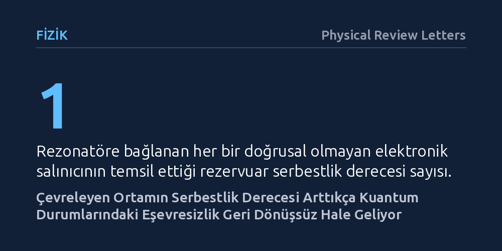

FIZIK · Physical Review Letters · 2026-10-07
Araştırmacılar, süperiletken kuantum devresinde fotonik kedi durumlarının çevreyle etkileşime girdiğinde kuantum özelliklerini nasıl kaybettiğini inceledi. Çevredeki osilatör sayısı arttıkça ortama sızan yol bilgisinin kendiliğinden silinemediği ve eşevresizliğin geri döndürülebilir olmaktan çıkıp kalıcılaştığı gözlendi.
Kuantum dünyasının neden gündelik makro dünyadaki gibi geri döndürülemez davrandığını, çevreye aktarılan bilginin silinemez hale gelme eşiği üzerinden doğrudan açıklıyor.

Schrödinger'in kedisi düşünce deneyi, bir nesnenin aynı anda iki zıt durumda bulunabileceği süperpozisyon ilkesini simgeler. Ancak gündelik yaşamda masalar, taşlar veya canlılar aynı anda iki farklı yerde ya da iki farklı durumda bulunmaz. Mikroskobik dünyanın kuantum kurallarından makroskopik dünyanın klasik gerçekliğine nasıl geçildiği ve süperpozisyon durumunun çevreyle etkileşime girerek nasıl kaybolduğu (eşevresizlik süreci), fizikçilerin uzun süredir yanıt aradığı temel bir sorudur.
Bir kuantum sistemi çevresiyle temas ettiğinde, sisteme dair bilgi çevreye dağılır. Şayet çevre çok küçük ve az sayıda serbestlik derecesine sahipse, bu bilgi bazen sisteme geri dönebilir ve kaybolduğu sanılan kuantum özellikleri yeniden canlanabilir. Fakat çevrenin tam olarak kaç bileşene ulaştığında bu bilgiyi yutup geri dönüşsüz bir eşevresizlik yarattığı, laboratuvarda kontrollü bir rezervuar yapısıyla doğrudan sergilenememişti.
Araştırmacılar bu eşiği yakalamak için devre kuantum elektrodinamiği (circuit QED) adı verilen süperiletken mikrodalga teknolojisinden yararlandı. Düzeneğin kalbinde, fotonik kedi durumunu depolayan bir mikrodalga rezonatörü yer aldı. Bu ana rezonatör, çevre rolünü üstlenen çok sayıda doğrusal olmayan elektronik salınıcıya bağlandı.
Sistemin en büyük avantajı, çevre görevi gören salınıcıların tek tek devreye alınıp çıkarılabilmesiydi. Rezonatöre etkili biçimde bağlanan her bir salınıcı, yapay çevrenin bir serbestlik derecesini oluşturdu. Deney ekibi, salınıcı sayısını adım adım artırarak ana rezonatördeki kedi durumuna ait 'hangi yol' bilgisinin çevre tarafından ne kadar ayırt edilebildiğini ve bu bilginin zaman içindeki akışını hassasiyetle kaydetti.
Deney sonuçları, çevrenin serbestlik derecesi arttıkça sistemin davranışında net bir kırılma yaşandığını ortaya koydu. Çevrede sadece birkaç salınıcı etkinken, çevreye sızan yol bilgisi sistem ile rezervuar arasındaki etkileşim sayesinde kendiliğinden silinebiliyor ve kuantum eşevreliliği kısmen toparlanabiliyordu.
Buna karşılık çevredeki salınıcı sayısı çoğaldıkça, kendiliğinden silinebilen bilgi miktarı düzenli olarak azaldı. Rezervuarda yeterli sayıda salınıcı yer aldığında, çevreye geçen yol bilgisinin daha sonraki etkileşimlerle geri silinmesi imkansız hale geldi. Böylece kuantum eşevresizliği, geri döndürülebilir bir bilgi salınımı olmaktan çıkıp kesin bir geri dönüşsüzlüğe dönüştü. Araştırmacılar bu süreci, bellekli (Markovyen olmayan) dinamiklerden belleksiz klasik kayıplara geçiş olarak nitelendirdi.
Bu çalışma, kuantumdan klasiğe geçişin soyut bir varsayım olmadığını; çevrenin serbestlik derecesine bağlı somut bir fiziksel mekanizmaya dayandığını gösteriyor. Makroskopik nesnelerin kuantum davranışı sergilememesi, trilyonlarca serbestlik derecesine sahip doğal ortamların bilgiyi anında geri döndürülemez kılmasıyla açıklanabiliyor.
Kuantum bilgisayar ve hassas kuantum algılayıcı geliştiren araştırmacılar için de bu bulgu doğrudan pratik önem taşıyor. Çevresel gürültünün serbestlik derecelerini ve etkileşim biçimlerini sınırlayarak bilginin tamamen kaybolmasını geciktirmek veya kaybolan kuantum bilgisini geri kazanmak için yeni tasarım stratejileri geliştirilebilir.